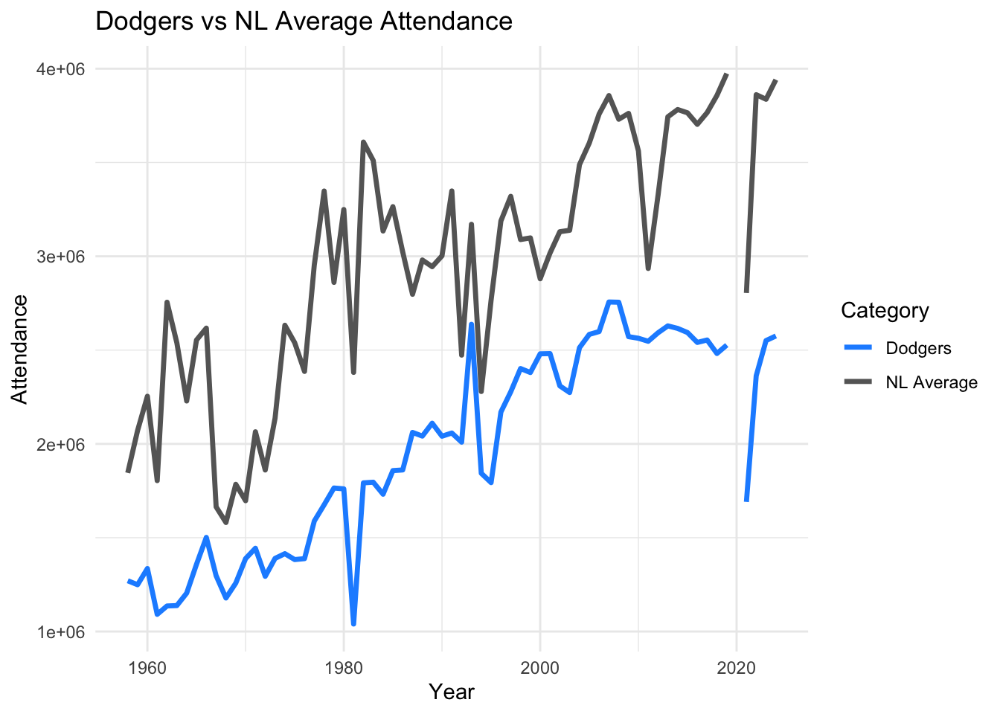

My Dashboard
Career Aspiration
I’m interested in working in the marketing space—especially in roles where I can use data and digital tools to make smarter decisions. My goal is to help teams understand what’s working, what’s not, and how to communicate better with the people they’re trying to reach. I’ve been building skills in data visualization, dashboards, and interactive reporting so I can translate numbers into something useful. Eventually, I’d like to work somewhere that values both strategy and execution—where I can contribute to meaningful campaigns with real results.
Skills
- R / Quarto / Shiny / Shinylive
- Python / Tableau
- Data cleaning and dashboarding
- Research communication
Education
A.S. Business Administration and Management, Mt.San Antonio College
B.A. Business Administration and Management with a concentration in Marketing, University of La Verne
MSDM Student, Cal Poly Pomona
Dashboard
This dashboard explores attendance trends for the Los Angeles Dodgers from 1958 to 2024…
Conclusion
This dashboard highlights the strong and consistent fanbase of the Los Angeles Dodgers, whose attendance has often outpaced the National League average across decades. Even during league-wide downturns or disrupted seasons, the Dodgers have remained a reliable draw. The comparison underscores the team’s legacy, loyalty, and lasting impact on Major League Baseball attendance trends.
Essay on Shiny Apps
What is a Shiny App?
Shiny is an R package that turns analysis into interactive web applications using R.
How It Works
- UI is defined using
fluidPage,sidebarLayout, and other layout functions. - Server logic lives in a reactive function that listens for input.
- Apps can be launched locally or hosted online (e.g., shinyapps.io).
Teaching It to Coworkers
If I were introducing Shiny to a teammate, I’d start by showing a basic layout with inputs and outputs. Then I’d walk them through how changes to an input — like a slider or dropdown — instantly update the visual or output using reactive logic. The key is that the UI and server components talk to each other live, making the app dynamic and customizable.
Essay on Shinylive
What is Shinylive?
Shinylive is a lightweight version of Shiny that runs entirely in the browser, no server required.
Comparison with Shiny Apps
| Feature | Shiny | Shinylive |
|---|---|---|
| Server Needed | Yes | No |
| Deployment | shinyapps.io, self-hosting | Quarto Pub, GitHub Pages |
| Best For | Heavy computation | Lightweight, browser-only apps |
Pros and Cons
Pros: - Super easy to share — no hosting or server needed - Runs in the browser - Great for small apps and demos
Cons: - Can’t use all R packages (only browser-compatible ones) - Slower with large datasets - Not ideal for heavy data processing or authentication
This site was built in Quarto as part of the M10 hands-on assignment. All charts, essays, and formatting reflect personal understanding of course materials as of April 2025.